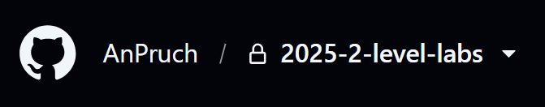

Публикация лабораторной работы
В данном документе описан порядок публикации лабораторной работы. Предполагается, что на момент публикации лабораторной работы существуют следующие элементы:
Текст лабораторной работы;
Работающая имплементация;
Тесты;
Базовая настройка лабораторной работы (
pyproject.toml,project_config.json,admin_utils/precommit.sh)
Далее описаны шаги, необходимые для успешной публикации лабораторной работы.
1. Проверка имплементации в админе
Удостоверьтесь, что при наличии лабораторной работы CI зелёный. Этот этап включает проверку следующих параметров:
Покрытие тестами (coverage);
Наличие стабов;
Проверка кода линтерами;
Наличие UML-диаграммы в RST файле;
Спеллчек работает корректно и не выдаёт ошибок;
Чтобы проверить лабораторную работу на соответствие этим и другим параметрам, можно использовать следующий скрипт:
./admin_utils/precommit.sh
Для запуска скрипта на Windows потребуется использовать Docker. Воспользуйтесь следующей инструкцией: Docker usage guide.
2. Проверка текста в админе
Чтобы проверить текст перед публикацией, необходимо построить RST.
Скрипт для построения RST в том числе запускается в ./admin_utils/precommit.sh.
sphinx-build -b html -W --keep-going -n . dist -c admin_utils
Откройте файл dist/admin_utils/index.html в браузере (например, с помощью
расширения VSCode
или опции Open in Integrated Browser)
и проверьте текст, а также API лабораторной работы.
Лабороторная проверяется на нескольких уровнях:
Логика;
Последовательность;
Опечатки;
Отображение изображений;
Ссылки;
Примеры;
Докстринги (совпадение описания объектов с их названиями, как в тексте, так и в API).
3. Публикация в публичный репозиторий
Далее файлы лабораторной работы публикуются в публичный репозиторий.
Чеклист:
Создать папку;
Перенести тесты (включая все дополнительные материалы из внутренней папки
/tests/assets);Перенести
README.rstс текстом лабораторной работы;Перенести стабы и переименовать их (например,
main_stub.py->main.py);Перенести дополнительные материалы из папки
assets.
Дополнительно обновите следующие места в репозитории:
README.rstс общей информацией о курсе (название, ссылка, дедлайн);pyproject.tomlПути для тестов (
tool.pytest.ini_options);При необходимости overrides для игнорирования ошибок mypy и pylint;
project_config.json(блокиlabs,stubs config);admin_utils/precommit.sh(тесты).
С помощью admin_utils/precommit.sh проверяется целостность
лабораторной работы (выложеннных стабов, тестов, форматирования кода).
По результатам публикации в публичном репозитории пустой лабораторной работы CI должен быть зелёным.
4. Проверка в приватном форке
Создайте форк публичного репозитория.
В настройках форка нажмите Leave fork network,
затем измените статус форка на приватный в блоке Change repository visibility.
У репозитория рядом с названием должна появиться иконка замка:

Крайне важно удостовериться, что форк приватный, чтобы не было утечек админской имплементации.
После того, как форк стал приватным, клонируйте его как VSCode проект.
Перед началом проверки лабораторной необходимо удалить собственный GitHub никнейм из
project_config.json, чтобы удостовериться в корректной работе PR name check,
который пропускается для админов курсов.
Проверка лабораторной работы выполняется в отдельной ветке. Файлы лабораторной изменяются, пушатся и просматриваются в формате Пулл Реквеста. Проверка должна проводиться для всех оценок (0, 4, 6, 8, 10) по следующему порядку:
Изменить оценку в
settings.jsonна 4;Внимательно идти по шагам лабораторной работы, проверяя текст и докстринги;
Для каждого шага вставлять имплементацию из админского репозитория (в том числе в дополнительные файлы, например,
start.py);После завершения всех шагов на оценку, сделать
git pushизменений;Проверить, что CI зелёный.
Повторить для оценок 6, 8 и 10.
Все найденные недочёты необходимо задокументировать в issue в админском репозитории.
При необходимости пропустить проверку тестов для других лабораторных работ обратитесь к инструкции Ignoring Lab Tests Optionally.
5. Публикация документации на сайте
Далее необходимо опубликовать лабораторную работу на сайт.
В репозитории сайта стабы хранятся в папке с соответствующим лабораторной работе названием.
+-- fipl-hse.github.io
+-- lab_1_classify_profile
+-- __init__.py
+-- main.py
Текст хранится в разделе с документацией.
+-- fipl-hse.github.io
+-- source
+-- docs
+-- index.rst
+-- archived_courses
+-- index.rst
+-- 2025_2026
+-- index.rst
+-- labs_2025
+-- labs_2026
+-- index.rst
+-- general_info.rst
+-- lectures_content.rst
+-- labs
+-- index.rst
+-- lab_1_classify_profile
+-- assets
+-- description.png
+-- lab_1.rst
+-- lab_1_classify_profile.api.rst
При публикации лаборатолрной работы файл с текстом выкладывается в соответствующую папку.
На примере лабораторной работы lab_1_classify_profile:
README.rst->lab_1.rstlab_1_classify_profile.api.rst->lab_1_classify_profile.api.rstПапка
assetsсодержит любые изображения, на которые ссылается текст.
Также необходимо добавить labs/lab_1.rst в labs_2026/labs/index.rst.
Если курсы предыдущего года ещё не архивированы, перенесите их в соответствующую папку archived_courses.
Обновите archived_courses/index.rst и docs/index.rst.
При переносе может понадобиться обновить ссылку на лекции соответствующего года:
`здесь <https://fipl-hse.github.io/docs/llm_2025/lectures_content.html>`__ -> :ref:`lectures-content-llm-label-2025`.
После добавления файлов, нужно построить сайт:
python tools/docs_generator/build_documentation.py
Проверьте добавленную лабораторную на предмет сломанных изображений, ссылок
и форматирования. Построенный сайт будет лежать в source/build/index.html.
После того, как обновление было замёржено, лабораторная работа появится на сайте.
6. Сообщение в чате курса
После полной публикации лабораторной работы, необходимо сделать анонс в чате (паблике) курса. В анонсе нужно упомянуть:
Обновление форков;
Необходимость сделать
git pull;Наличие документации на сайте;
Дедлайн.
Если студентов необходимо обновить вручную, воспользуйтесь инструкцией Обновление форков студентов. В таком случае, необходимо уведомить студентов об успешном обновлении форков.
Пример анонса:
❗️Уважаемые студенты, анонс❗️
Лабораторная работа №1.
Работа анонсирована. Дедлайн: 28 сентября.
Описание можно найти на сайте.
Форки обновлены, делайте `git pull` и приступайте к выполнению.
Для удобства можно прикрепить к тексту ссылку на сайт (Ctrl + K для эмбеддинга в Телеграме).